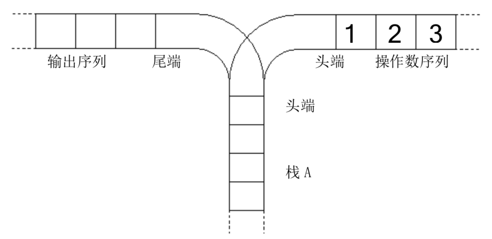
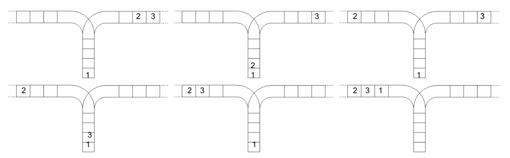

栈是计算机中经典的数据结构，简单的说，栈就是限制在一端进行插入删除操作的线性表。
栈有两种最重要的操作，即 pop（从栈顶弹出一个元素）和 push（将一个元素进栈）。
栈的重要性不言自明，任何一门数据结构的课程都会介绍栈。宁宁同学在复习栈的基本概念时，想到了一个书上没有讲过的问题，而他自己无法给出答案，所以需要你的帮忙。

宁宁考虑的是这样一个问题：一个操作数序列，从 $1$，$2$，一直到 $n$（图示为 $1$ 到 $3$ 的情况），栈 $A$ 的深度大于 $n$。
现在可以进行两种操作，
- 将一个数，从操作数序列的头端移到栈的头端（对应数据结构栈的 push 操作）
- 将一个数，从栈的头端移到输出序列的尾端（对应数据结构栈的 pop 操作）
使用这两种操作，由一个操作数序列就可以得到一系列的输出序列，下图所示为由 1 2 3 生成序列 2 3 1 的过程。（原始状态如上图所示）

你的程序将对给定的 n，计算并输出由操作数序列 1，2，...，n 经过操作可能得到的输出序列的总数。
 Comet OJ
Comet OJ